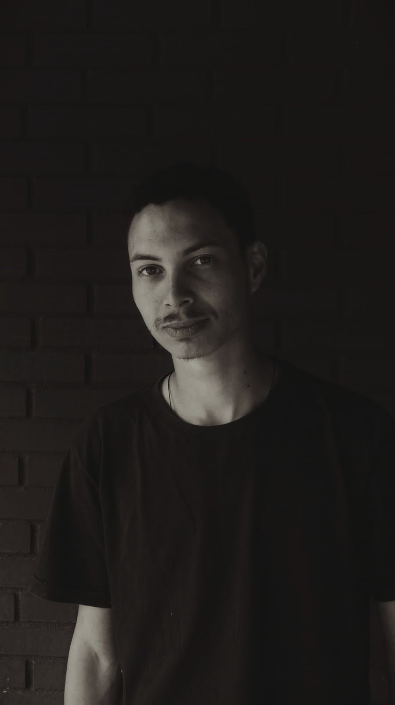

Gustavo Dalton
Me chamo Gustavo Dalton, desenvolvedor em início de carreira, focado em Front-End e sempre em busca de aprendizado constante.
Atualmente curso Análise e Desenvolvimento de Sistemas na Unicesumar. Também participo de um bootcamp Front-End na DIO, estudando HTML, CSS e JavaScript, além de me aprofundar em MySQL, Python e Redes com a plataforma Curso em Vídeo.
Habilidades
- 💻 HTML5 / CSS3 / JavaScript: Criação de páginas web responsivas e interativas.
- 🗄 MySQL: Noções de banco de dados relacionais.
- 🐍 Python: Programação básica e lógica computacional.
- 📱 Flutter / Dart: Desenvolvimento mobile multiplataforma.
- 🔧 Git / GitHub: Controle de versão e colaboração em projetos.
- 🌐 Redes: Conceitos básicos para infraestrutura de TI.
Projetos
Em breve, apresentarei meus projetos em desenvolvimento.
Certificado
Confira um dos meus certificados de formação:
Contato
- GitHub: github.com/Daltoncode
- LinkedIn: Gustavo Dalton
- E-mail: gustavodaltondev@gmail.com
- WhatsApp: +55 41 99199-3430